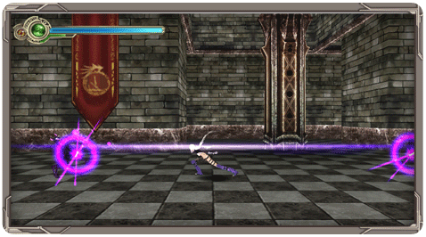
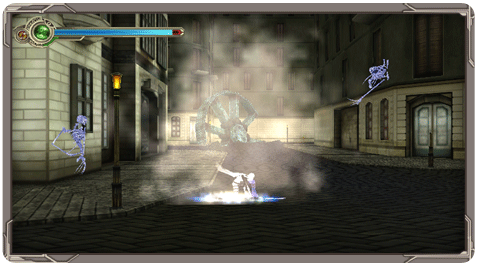
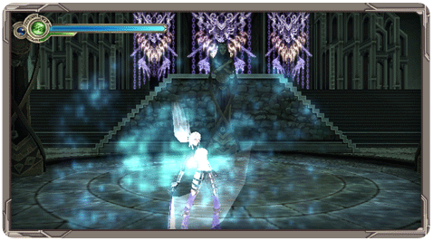

En plus des attaques normales, Celia peut utiliser trois techniques de Ki différentes pour en terminer avec ses ennemis.

Illusion Tears (Larme d'Illusions) :
En maintenant le
bouton 1 tout en gardant Celia immobile, vous déchainerez une puissante vague de Ki qui affectera tous les ennemis proche de vous. Cette technique consume un quart de votre Barre de Ki. Avec la manette Classic Controller, cette attaque se réalise avec le bouton y.

World Ender (Fin du Monde) :
Si lors d’un saut vous appuyez en bas sur la croix directionnelle et maintenez enfoncé le bouton 1, Celia se chargera d’énergie et réalisera une attaque piquée qui lancera dans les airs tous les ennemis qui étaient au sol. Cette technique consume un quart de votre Barre de Ki. Avec la manette Classic Controller, cette attaque se réalise avec le bouton y.
Neokinesis:

Lorsque la Barre de Ki de Celia est pleine, il vous est possible d’appuyer sur le
bouton A afin d’activer la Néokinésie. À ce moment, le Ki de Celia commencera à diminuer très vite mais toutes les attaques que vous réaliserez produiront des dégâts additionnels et affecteront tous les ennemis qu’elles touchent, y compris les groupes d’ennemis. Avec la manette Classic Controller, cette attaque se réalise avec le bouton a.